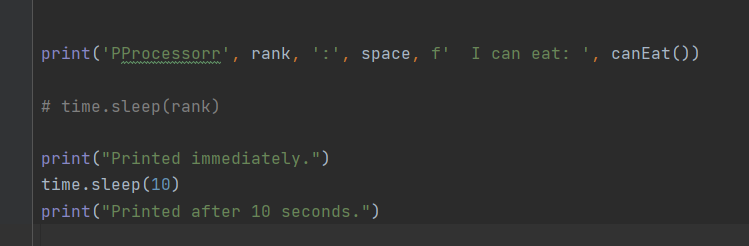

Pisem ovo u Pythonu i pokusavam nesto ispisat, uspavat dretvu 10 sec i onda opet nesto ispisat s ovim odsječkom
I to radi kako sam zamislio kada pokrenem program kao najobicniji Python program(tj runnam kod u samo jednom procesu), ali kada pokrenem preko mpiexec-a taj pogram na vise procesa dogada mi se da se prvo odradi cijeli ‘sleep’ i onda ispisuje citav ispis odjednom, ukljucuji i ono sto je trebalo biti prije sleep-a
Kada pokrecem na vise procesa to radim s mpiexec -n 4 python -m mpi4py helloworld.py
Zna li tko zasto se ovo ponasa tako cudno i sta treba napravit?
